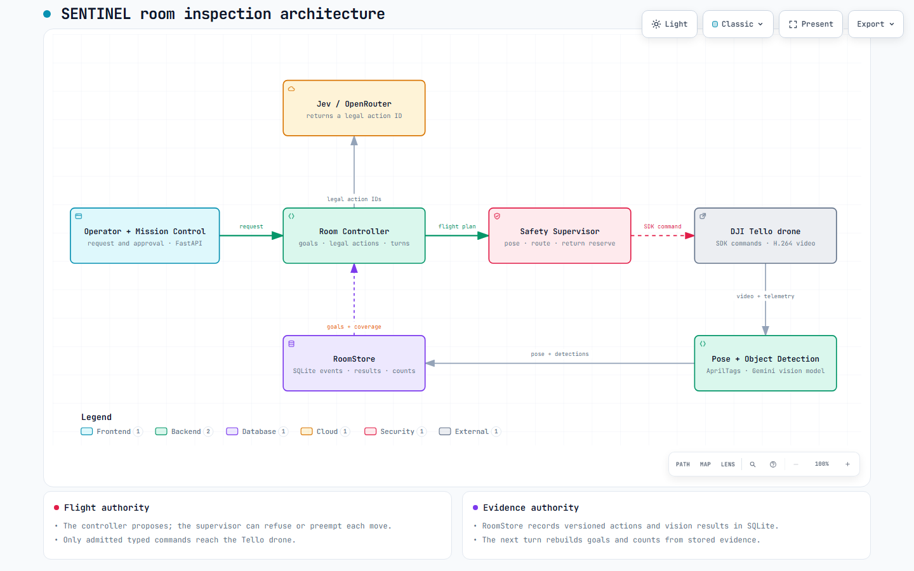
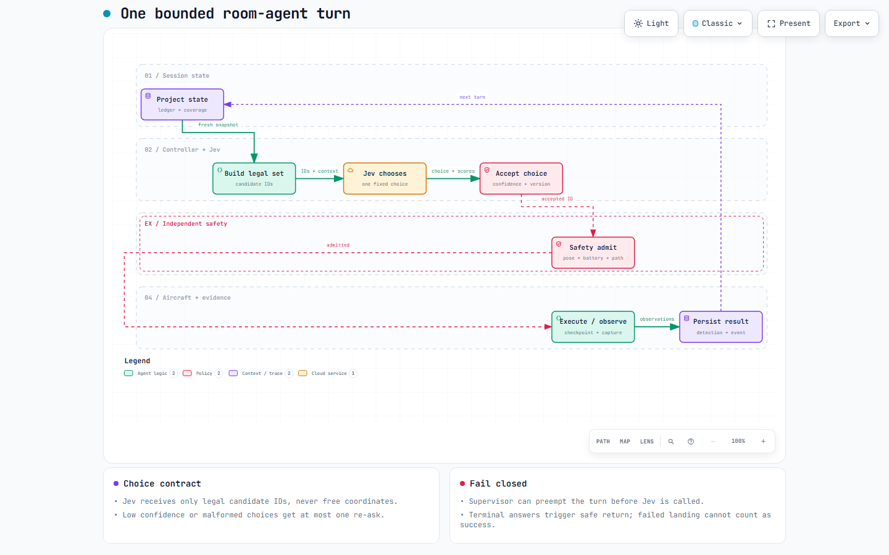
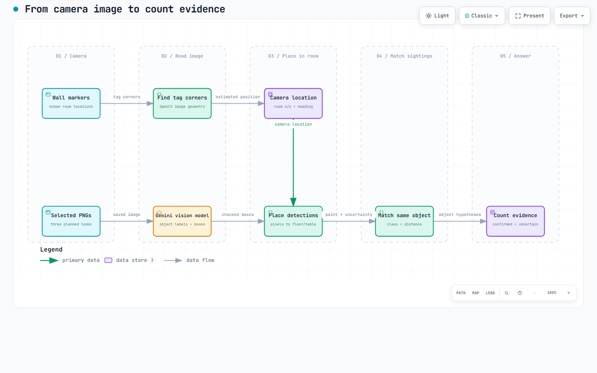

SENTINEL is a supervised drone-inspection prototype for mountain trails, designed to flag potential hazards for human follow-up. For the Producathon demo, we exercise its agent, flight-safety and perception loop indoors with a DJI Tello drone, using room-search tasks suited to the venue.

Figure 1. Component connections. Full Archify diagram.
Mission Control is a FastAPI-served browser for requests and approvals. The runner validates the run manifest, calibration, consent and links before opening live clients. RoomStore keeps a versioned, append-only event history in SQLite alongside requests, results and detections. Each turn, the room controller rebuilds state from these records, constructs legal action IDs and asks Jev to select one. A separate safety supervisor checks pose, flight bounds, command limits, time and return-energy reserve before DJITelloPy sends a typed Tello command. The camera stream feeds localization and selected object-detection frames; their results are written back to RoomStore.
Implemented stack: Python 3.11+, FastAPI, DJITelloPy 2.5.0, PyAV, OpenCV, SQLite/WAL, Jev and Gemini through OpenRouter. Gemini receives selected frames after consent; Jev receives state and legal choices.
Tello is a small indoor drone with SDK flight commands, battery and height telemetry, and a forward H.264 camera. DJITelloPy and PyAV connect these interfaces to the runner. Its downward vision and infrared ranging assist hovering; its IMU and barometer contribute to onboard flight control. SENTINEL uses the forward camera for mapped AprilTags and objects, and reads height and battery through the SDK. Tello does not expose a precise room coordinate, so the software must estimate horizontal position and heading. SDK moves can drift, and the drone's Wi-Fi link requires a separate internet connection for cloud model calls.
Hardware references: Ryze Tello manual · Tello SDK 2.0.
We compared the services on 21 written mountain trail-observation cases, with three calls per case for each model. Each call answered five fixed questions. The scored measures were whether a hazard needed action and whether a human review was needed; six unclear hazard cases were excluded. This was a model-service comparison, not a room-viewpoint or flight test.
| Measure | Jev | GLM-5.3-Flash |
|---|---|---|
| Mean response time, 63 calls each | 0.40 s | 18.16 s |
| Correct hazard classification, 15 scored cases | 12/15 | 12/15 |
| Required human reviews found | 11/11 | 11/11 |
| Unnecessary human reviews | 10 | 5 |
| Listed API price, per million tokens | $0.042 input; output free | $0.075 input; $0.25 output |
Jev's mean reply was about 45 times faster and its listed token price was lower, with the same 12/15 hazard score. It missed one actionable hazard (GLM missed none), raised two false alarms (GLM three), and requested five more unnecessary reviews. Prices are from the Jev 1.13 and GLM listings on 24 September 2026, not billed totals. The tested Jev endpoint resolved to “jev-latest,” so its revision was not pinned.
Jev selects code-supplied actions; code checks flight, observations and persistence.

Figure 2. One bounded agent turn; persistence feeds the next state projection. Full Archify diagram.
JevJudge submits the choices and criteria to OpenRouter. assess_choice checks the returned ID and probabilities, confidence and margin; the controller also checks version and evidence freshness. A malformed or weak reply gets one re-ask, then escalation.The room has a calibrated coordinate frame and mapped AprilTag 36h11 wall markers. OpenCV's open-source ArUco module finds their image corners; its camera-position solver compares those pixels with the markers' known room locations. It combines two or more visible markers when possible. During a stationary burst, at least eight readings are required. Their median horizontal coordinates and heading become the drone's position estimate only if 95% lie within 10 cm of that centre. A single-marker estimate is less trusted and must agree with the current track.
After a completed move, the tracker predicts displacement and increases uncertainty. A reliable marker view re-anchors the estimate; without one, it eventually becomes stale. Tello supplies height. The resulting camera location is used to place observed objects in the room.
An OBSERVE ID resolves to a declared viewpoint. The planner starts from the current measured pose and calibrated speed. At the zone, it plans three looks at −30°, 0° and +30°; each yaw and capture is independently safety-admitted. Success requires completed commands, every expected PNG and a measured arrival compatible with the declared pose. The three detector calls then run concurrently during one bounded wait, and their results are restored to capture order. The supervisor continues checking position, return reserve and operator intervention during that wait.
Timeouts and provider failures become typed outcomes without coverage credit. Only correlated, successful, current-version frame results can produce OBSERVE_SUCCEEDED. The next turn reprojects SQLite rather than trusting an informal model memory. A terminal answer requests safe return and confirmed landing.
ingest_result atomically stores each request, provider payload, result identity and status, detection boxes and initial hypotheses in SQLite. Identical replay returns the prior result; conflicting replay is refused. Failures and old snapshots remain auditable but cannot authorize current state. After all expected frames correlate and pass their checks, the controller appends a separate OBSERVE_SUCCEEDED room event for the next state projection.
During flight, selected images support live decisions. After landing, a separate pipeline can analyse the recorded video. Both start from the Tello camera but select and interpret frames differently.

Figure 3. Top: wall markers locate the camera. Bottom: the vision model marks objects in selected images. Camera location places those marks in the room, then repeat sightings are matched before counting. Full Archify diagram.
Live selection follows the planned OBSERVE action, not a quality-ranked video search. The chosen viewpoint defines three looks at −30°, 0° and +30°. After each admitted turn and settle, CAPTURE saves one decoded H.264 frame as a PNG. Only those three images go to Gemini, a vision-language model (VLM) that reads image and text instructions and returns object classes, bounding boxes and confidence bands. The controller checks all captures and the measured arrival; each PNG carries time, heading, pose revision, session version and SHA-256. The adapter rejects mismatched image, provider or model identities. The bands are provider outputs: bounding-box precision—the fraction of reported boxes that match real objects—has not been measured on labelled real demo frames.
A separate sentinel_perception pipeline reads recorded Tello H.264. Optical flow separates turns from stationary viewing periods. Its selection pass rejects frames with excessive motion or clipped exposure and chooses a high-texture keyframe, with optional alternates, for each view. Grounding DINO, an open-vocabulary object detector, analyses sampled stationary frames; the pipeline removes invalid or duplicate boxes, tracks objects within each view and checks whether a full yaw scan returns to its starting direction. Outputs are a scene summary, annotated video and event log. A bridge can export detections for survey replay. Model weights must be staged before this path runs.
For a static detection, the box's bottom-centre pixel defines a ray through the calibrated camera. The current pose transforms that ray into the room frame, where it intersects a declared floor or support plane. Invalid intersections, stale poses and undeclared supports leave a detection unplaced. A valid room point receives a covariance that grows with range; dead-reckoned pose adds uncertainty. Thus two visually similar boxes can be compared in metres without pretending that an uncertain estimate is exact.
Static sightings can merge only when they have the same object class and floor or support surface, come from different captures, and their room positions are close relative to their uncertainty. The closest compatible pairs are tried first. Two existing object identities cannot collapse into one; replayed estimates are ignored. Every combined object keeps links to its source images. It is confirmed only after sightings from distinct planned viewpoints; otherwise it stays uncertain. These rules limit duplicate counts and mistaken merges, but cannot guarantee correct identity if a box label or camera location is wrong.
People are treated differently because they can move: the maximum simultaneous count in one frame is a lower bound, with no cross-frame identity tracking. Coverage is credited only to completed, authorized looks. Unplaced targets or missing viewpoint coverage prevent a confident full-room count.
Tag occlusion, poor lighting and Tello drift can make localization too uncertain to continue. Geometric grounding depends on camera calibration and the chosen support plane; unsupported boxes remain unplaced. Declared-viewpoint coverage is only a proxy for complete visual coverage. Replay and simulated-controller tests check software contracts, not detection recall, wireless reliability or safe flight in an unfamiliar room. The real Tello backend allows only one live instance per process.